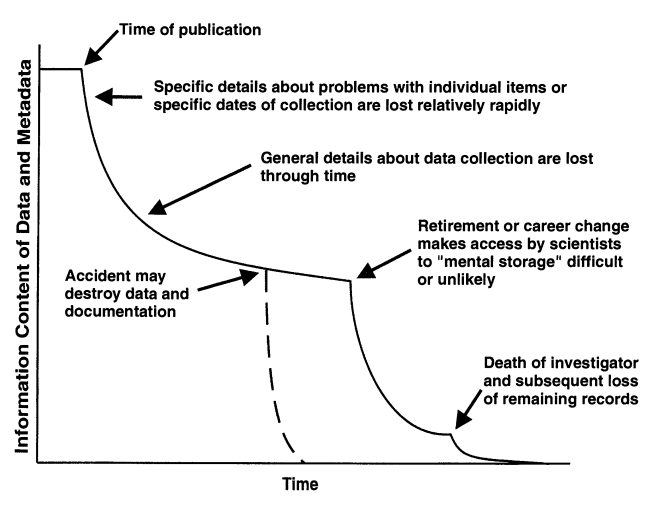

Metadata to describe research data
Overview
🚧 This chapter is under construction.
Some common questions heard during research:
What is metadata?
What metadata should I be collecting?
Where does metadata go?
As you collect and work with your data, there is a large amount of contextual information about the data and your research process that accumulates. This contextual information is called metadata, and you don’t want to lose track of it because it can be critically important for understanding and using the data later. Metadata are data about the data, and as a general rule, they should describe
- Who collected the data
- What was observed or measured
- When the data were collected
- Where the data were collected
- How the data were collected (methods, instruments, etc.)
- Sometimes, stating why the data were collected can help future users understand data context and evaluate fitness for use.
Preserving these metadata along with your actual data (measurements, observations, etc.) makes them more usable, and helps prevent the loss of information about data over time, as illustrated in Figure 1. Metadata are also essential to the reproducibility of research results, so when it comes time to publish your papers and datasets, you’ll have to provide adequate metadata for reviewers and colleagues to understand and use them.

Creating and managing metadata
Assembling and preserving metadata should be an integral part of most research activities, including day-to-day data work and project management practices. Below are a few suggestions on how to start.
- Keep a detailed project log and populate it with useful metadata, such as:
- how new data are collected,
- for ancillary data (not directly collected by you), documentation of the original data source,
- how the data are cleaned, quality assured, and prepared for analysis,
- data analysis steps and methods used to create figures, statistics, and derived data products,
- who is doing what.
- Think about what datasets are most valuable and how they should be published.
- You can’t publish every single data file you have, so decide what will be most interesting and useful for other researchers and your future self.
- After you prioritize some research products for publication, consider what people will need to know to use them effectively.
- This gives you a target for collecting appropriate metadata for your published dataset.
- Start creating structured metadata files and keep them with your data.
- Try to be systematic and complete about describing your data with metadata. A metadata template, such as one of the Jornada templates, helps with this.
- Organize your research products in clearly-labeled project directories where data and metadata live together.
- Eventually, you will probably need to create a standard metadata file, such as EML, to publish your data. Applications for editing metadata, such as ezEML from the Environmental Data Initiative (EDI) repository, are a huge help with this task.
- There are concrete tips for metadata later in this guide!
- As you approach publication, see the Publish a dataset chapter for help with assembling the metadata and preparing your dataset for a repository.
As always, discussing your project with a data manager or data curator and asking for advice about any of these activities is a smart move. At the Jornada, the Information Management team is happy to help, or you can reach out to the curators at our partner repository, the Environmental Data Initiative.1
- You need data AND METADATA to make a usable dataset and get it published.
- Make sure to plan for and start creating metadata early in your research.
- Keep your research files well-organized, documented, and keep metadata and data together.
- Ask your friendly neighborhood data manager for help anytime.
Recommendations for Jornada Metadata
Title
Abstract
Personnel and organizations
Temporal, geographic and taxonomic coverage
Methods
Literature cited
Data files and attributes
Funding
Licensing
Footnotes
Reach out to the Jornada IM team at jornada.data@nmsu.edu, or to the EDI support channel at support@edirepository.org. If you are at different LTER site, this list of Information Managers may help. Outside of LTER, your academic institution’s library may have data curators, or you can check the Data Curation Network, a professional membership organization for data curators.↩︎